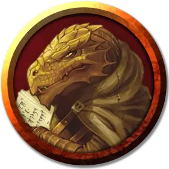

Ришаал Хранитель Страниц
Rishaal the Page-Turner
Средний Гуманоид (Драконорождённый), нейтральный, именной НИП

Класс Доспеха 12 (15 с доспехами мага)
Хиты 40 (9к8)
Скорость 30 футов
| мод | спас | ||
|---|---|---|---|
| СИЛ | 9 | −1 | −1 |
| ЛОВ | 14 | +2 | +2 |
| ТЕЛ | 11 | +0 | +0 |
| мод | спас | ||
|---|---|---|---|
| ИНТ | 17 | +3 | +6 |
| МДР | 12 | +1 | +4 |
| ХАР | 11 | +0 | +0 |
Навыки История +6, Магия +6
Сопротивление урону огонь
Чувства пассивное Восприятие 11
Языки Общий, Дварфийский, Драконий, Эльфийский
Опасность 6 (2300 опыта)
Бонус мастерства +3
Особенности
Использование заклинаний. Ришаал является заклинателем 9-го уровня. Его базовой характеристикой является Интеллект (Сл спасброска от заклинания 14, +6 к попаданию атаками заклинаниями). У него подготовлены следующие заклинания волшебника:
• Заговоры (неограниченно): волшебная рука, огненный снаряд, свет, фокусы
• 1 уровень (4 ячейки): волшебная стрела, доспехи мага, обнаружение магии, щит
• 2 уровень (3 ячейки): внушение, туманный шаг
• 3 уровень (3 ячейки): контрзаклинание, огненный шар, полёт
• 4 уровень (3 ячейки): высшая невидимость, град
• 5 уровень (1 ячейка): конус холода
Действия
Оружие дыхания (перезарядка коротким или продолжительным отдыхом). Действием Ришаал может выдохнуть 15 футовый конус огня. Каждое существо в конусе должно совершить спасбросок Ловкости Сл 10, получая 2к6 урона огнём в случае провала или половину урона в случае успеха.
Кинжал. . Рукопашная или дальнобойная атака оружием: +5 к попаданию, досягаемость 5 футов или дистанция 20/60 футов, одна цель. Попадание: Колющий урон 4 (1к4 + 2).
Описание
Фасад этого книжного магазина украшен очаровательным рисунком золотого дракона, свернувшегося вокруг сокровищницы книг и свитков. Изнутри магазин великолепно отделан деревом, а в воздухе витает манящий запах старых книг. Помещение библиотеки занимает два этажа этого трёхэтажного здания и кажется невероятным, что оно может вместить такое огромное количество книжных шкафов и полок.
Магазином управляет драконорождённый невысокого роста, потомок золотых драконов по имени Ришаал Хранитель Страниц, который живёт на третьем этаже. Ришаал — член Бдительного Ордена Волшебников и Защитников.